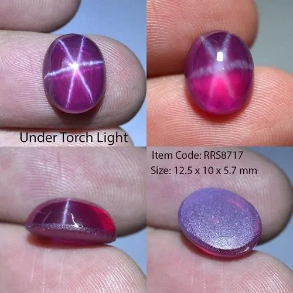
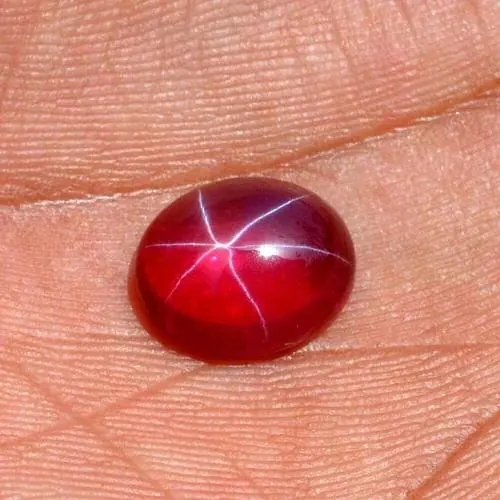

合成紅藍寶石：焰熔法到水熱法的進化
合成紅藍寶石與天然寶石成分相同，卻在實驗室裡數週長成。焰熔法、助熔劑法、水熱法，三條通往「完美」的路。


核心定義
合成紅藍寶石（synthetic corundum）是實驗室中長出的、化學成分與晶體結構完全等同天然剛玉的寶石——它是「真剛玉」，只是「人造出身」。合成目的不是造假，而是供應穩定、成本可控的寶石材料，用於工業（錶面、光學）與平價珠寶。
三大主流技術：焰熔法（Verneuil）是最早量產的，把氧化鋁粉熔滴在種晶上結晶；助熔劑法（flux）模擬天然礦液的緩慢結晶；水熱法（hydrothermal）在高溫高壓水溶液中生長，最接近天然環境、品質也最好。
特徵與分類
| 方法 | 原理 | 品質 | 特徵 |
|---|---|---|---|
| 焰熔法 | 粉末熔滴結晶 | 常見弧紋、氣泡 | 最便宜、最常見 |
| 助熔劑法 | 熔鹽中緩慢結晶 | 較少弧紋 | 內含助熔劑殘留 |
| 水熱法 | 高溫高壓溶液 | 最接近天然 | 生長紋、種晶線 |
焰熔法合成紅藍寶價格極低（一克拉級別常以個位數美元計），是便宜飾品與工業應用的主力；助熔劑與水熱法合成品質高、成本高，常被用於需要「逼真」的場合——也因此更需要鑑定功力。
科學原理
焰熔法的原理是「熔滴結晶」：氧化鋁粉（含鉻等著色元素）從高處落下，穿過氫氧焰（約 2000°C）熔化，在下方種晶上凝結成長——快則數小時長出梨形晶體。缺點是生長快，常留下弧形生長紋與氣泡。
助熔劑法模擬天然礦漿：把剛玉成分溶入高溫熔鹽，慢慢降溫讓晶體析出，數月長成——更慢、更像天然，內含物也從氣泡變成「助熔劑殘留」與「鉑坩堝碎片」。水熱法則用高溫高壓水溶液輸送養分，生長速度與品質都可精控。
鑑定與鑑別方法
- 焰熔法：十倍放大找弧形生長紋與圓形氣泡
- 助熔劑法：找助熔劑殘留、鉑金碎片、羽毛狀內含物
- 水熱法：找與天然不同的生長紋與種晶殘片
- 看顏色：合成紅寶顏色常過於均勻鮮豔
- 紫外螢光：合成紅寶螢光常比天然更強更均勻
- 實驗室光譜：微量元素與缺陷特徵可定論
市場行情與保養建議
合成紅藍寶的市場定位是「誠實的平價寶石」：只要明確標示 synthetic，它可以是性價比極高的日常珠寶。問題出在「以合成冒充天然」——這在旅遊區、夜市與部分網購中屢見不鮮。
消費者的防線：價格異常便宜＋顏色過於完美＝高風險；要求權威證書；用十倍放大鏡找弧形紋與氣泡。合成本身不是罪，隱瞞才是。
常見誤區
合成紅藍寶是化學與結構完全等同天然的真剛玉，只是出身實驗室。它與玻璃仿品有本質區別——但若不誠實標示，就是欺騙。
高品質水熱法合成的紅藍寶，肉眼與多數儀器都可能誤判為天然——它需要實驗室的深度檢測才能確認出身。肉眼能抓的是焰熔法，不是全部。
冷知識
法國化學家 Auguste Verneuil 在 1902 年發表焰熔法合成紅寶石技術，開啟了寶石合成的工業時代——一百多年前，實驗室已經能「複製」紅寶石。
合成剛玉硬度 9、耐磨耐刮，是手錶鏡面與工業視窗的標準材料——你手上的錶，可能就是「合成藍寶石」做的。
反直覺觀點
成分與結構相同，硬度自然相同（都是 9）。合成不是「次等」——它的品質甚至可以更穩定。區別只在來源與市場價值，不在物理性能。
天然剛玉帶內含物、色帶與產地特徵；合成剛玉可以做到「完美的乾淨」——但正因為太完美，反而洩露了實驗室出身。天然的不完美，成了天然的名片。